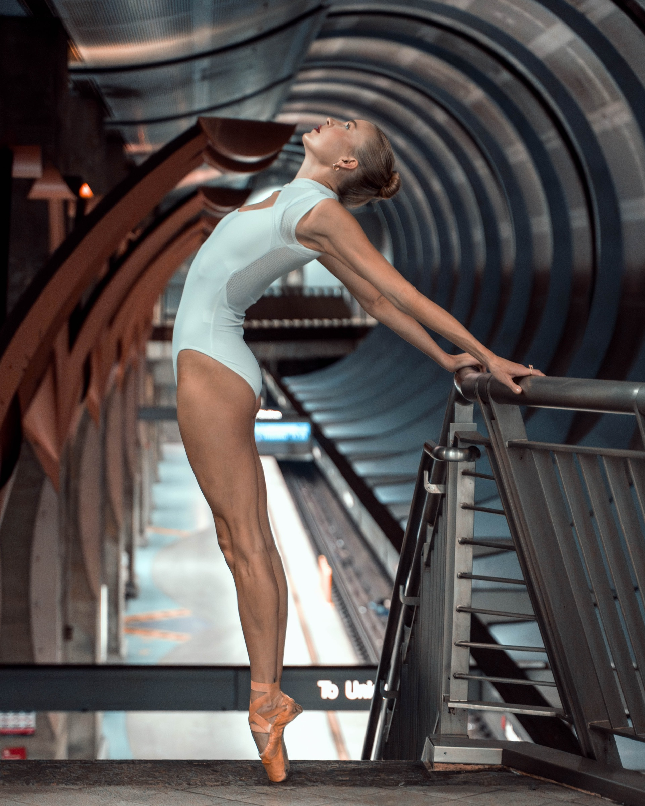
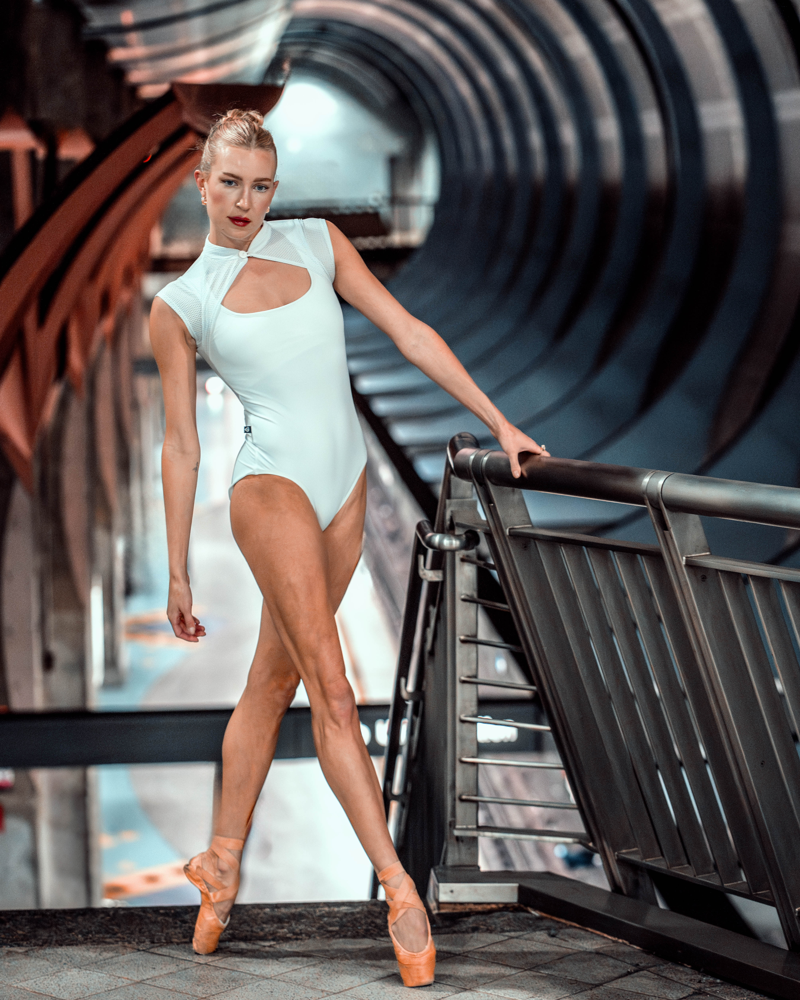

Fluorescent light has no mercy — which makes it perfect. No romance, no soft edges, just raw contrast. Madeline leaned into it, letting the hard shadows slice through the shapes she made, turning the tunnel into a proscenium arch for anyone paying attention.
Between trains, the station falls quiet for a beat or two. Those were the moments we chased — when the air felt briefly weightless and Madeline could stretch into the empty space, a single figure holding court over tile, metal, and distant tracks.
This wasn’t about turning a subway into a stage so much as recognizing that it already is one. People rush, wait, stare at their phones, drift through each other’s frames. Madeline stepped into that flow, slowed it down, and reminded the space — and everyone in it — that elegance can happen anywhere, even on concrete steps that smell like the city.